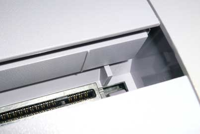
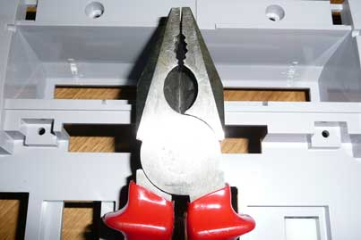
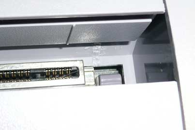

Brutalise! Cartuchos japa em SNES!
 :::. Por Gigacom - Alguns cartuchos difíceis e caros de se encontrar nas suas versões Playtronic ou americanas, são curiosamente fáceis e baratos de se encontrar em suas versões japonesas. O problema é que o SNES tem umas travinhas que impedem um cartucho japa ser encaixado devidamente...
:::. Por Gigacom - Alguns cartuchos difíceis e caros de se encontrar nas suas versões Playtronic ou americanas, são curiosamente fáceis e baratos de se encontrar em suas versões japonesas. O problema é que o SNES tem umas travinhas que impedem um cartucho japa ser encaixado devidamente...
__________________________________________________________________
fonte das imagens: mmmonkeys
Tem gente que vampiriza o cartucho japa, fazendo uns furos em suas laterais. Fica horrivel, mas funciona. Mas ha uma maneira mais prática e bonitinha de se adaptar um SNES para receber cartuchos japoneses é até bem simples.
As travinhas que impedem um cartucho japa de se encaixar no SNES são facilmente visivéis, só abaixar aquela tampinha da entrada de cartuchos que você a vê:

Para remover essa travinha, já vi gente enfiando um alicate de bico e quebrando ela, o slot, a tampinha e as laterais do encaixe... então, para evitar uma tragédia dessas, primeiro, abra o seu SNES (o quê? não tem uma chave para abrir aquele parafuso? Clique aqui e aprenda como fazer uma!), e desmonte essa parte da entrada de cartuchos. Você verá que por dentro o SNES tem mais peça que um Playmobil. Retire a peça de plastico onde estão as travas, e com um alicate quebre-as. Elas saem facilmente, não se preocupe, é só pegar a ponta do alicate e agarrar bem na base da trava e movê-la pro lado, que ela irá quebrar sem provocar mais estragos.

Remonte seu SNES, e prontinho! Só curtir agora os Legend of Mana, Mario RPG, Chrono Trigger versão japa que a gente acha por aí à R$ 20,00.

É isso amigos, duvidas, sugestões declarações de amor, já sabem, só postar lá no Trombone.
Acesse o Trombone e comente sobre essa matéria!


O Master System 3 foi mais fatiado que carne de segunda antes de ser moída... tiraram o suporte ao óculos 3D, colocaram uma travinha meio vagabunda para servir de liga/desliga, sumiram com o botão reset e com as saídas A/V... ...